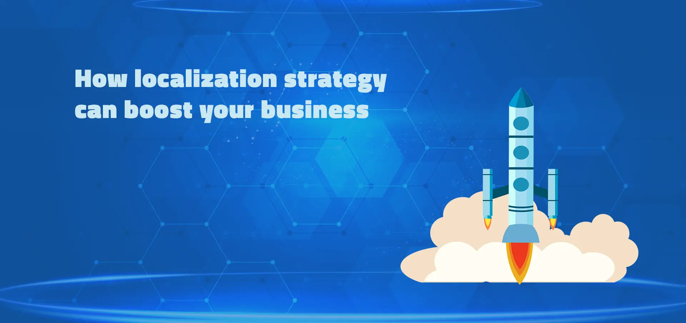
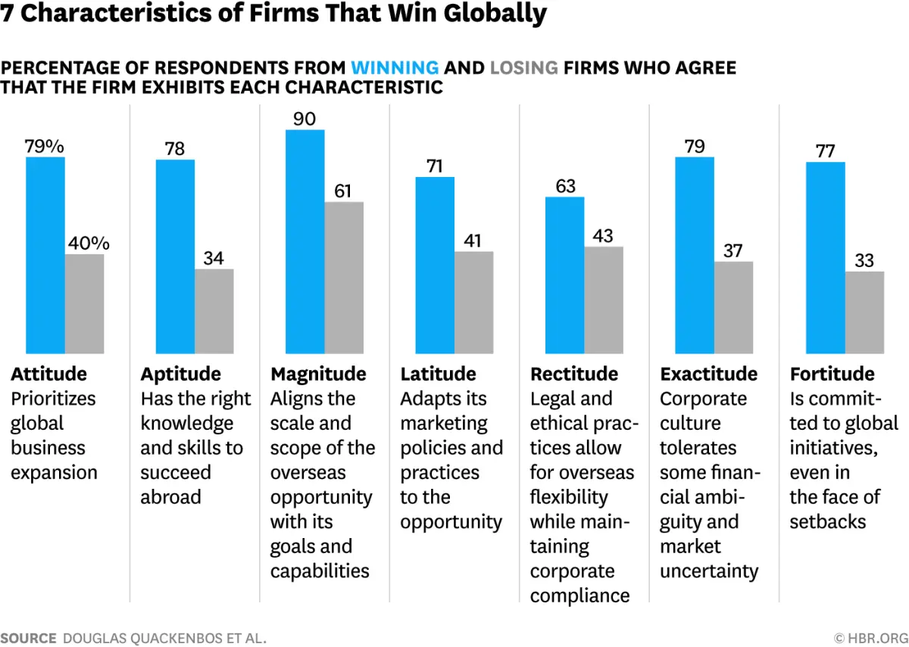
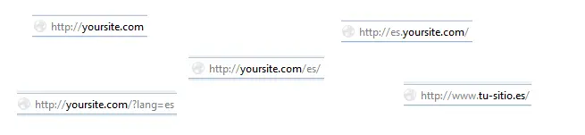
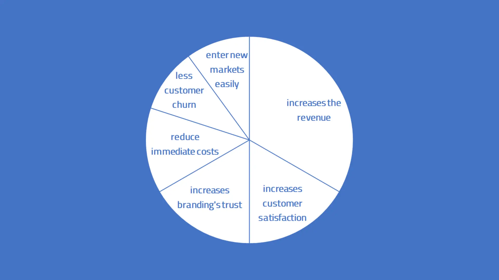

Today, you're going to learn how to build your strategy for a successful globalization.
You will get a method on how you can increase your sales and make your customers more happy.
The best part?
We provide you with a step-by-step plan of what you need to get to your localization strategies.
We'll also show you some examples of major brands and how they did it.
What you can expect
- What is a strategy for localization
- Why do you need such a strategy
- Build your localization approach (step-by-step)
- Benefits of localization
- Localization checklist
- Examples
- Summary
What is a localization strategy?
A localization strategy is a way of dealing with a company's customers' purchasing habits, behavior, and cultural differences throughout globalization.

Why do you need it?
It will undoubtedly be difficult to develop local leadership, sales, and other skills. In a local market, there may be unanticipated obstacles, ranging from minor details to issues with complying with country-specific legislation.
With this in mind, globalization should be a step-by-step strategic process that takes into account the genuine cost and time required, as well as the possible prospects offered by new markets.
According to a study of harvard business review the management of the company which succeeded in going global acted like this:
- They ensure that the company has the necessary expertise and abilities.
- They match the size and breadth of the international opportunity to the firm's objectives and capabilities.
- Likewise, they modify the firm's marketing policies and processes in response to the opportunity.
- They guarantee that the firm's legal and ethical policies allow for international flexibility while adhering to corporate compliance.
- They encourage a company culture that accepts some financial ambiguity and market volatility.
➡️ Ultimately, they have prepared well and accepted some mistakes to happen. That is also what you need for your localization strategy!

Because localized products and services better meet local market circumstances and minimize cultural barriers, professional localization helps to lower the barrier for new prospective customers.
Localization enhances your customer base by allowing more customers to learn about your items.
Build your localization approach (step-by-step)
Prepare
Get the right people involved in your company to do this project. And create a reasonable timeline for achieving the end goal.
Try to attract local talents: To get the right and experienced workers will may give you insights in the cultural aspects
Gather the inputs
To determine whether there is a strong potential to join the markets, it might be beneficial to send someone there to learn from local partners or individuals.
In addition, conduct the following research: Discover the facts and data about a new target country.
Learn how to determine prices: legal and economic variations in the target nation may be a barrier.
➡️ The most important part is to get a better understanding of which brands are your primary rivals and how consumers buy in that market. This will provide the structure for everything you do after that.
Create your vision
Your mission statement should describe what your company does and how it is different from other organizations in the new market.
Your vision statement should be a future state of what your organization wants to achieve over time with the project.
Build the plan
Make a international business plan: Evaluate your needs and goals
When looking at the content marketing side of things, you should setup a process to create the marketing message and see what results can be produced in other markets (Messages, graphics, and UX elements).
Successful marketing campaigns can help to test out if your strategy is working and if we're targeting the right audience.
Finally, do the customer segmentation which defines the different groups of people or organizations a company aims to reach or serve.
Make tests with localized content
Test your strategy by reaching out to potential buyers in new markets with your messaging.
To begin, make use of the slogans, key phrases, and CTAs identified in the localized-marketing strategy when developing the plan.
Begin with a pilot project to get traction, and then consider localizing entire experiences based on the data.
The objective should also be to see if your communications can persuade them to engage with your business.
For example, moderated customer journey testing can assist you in understanding and appreciating acceptable ways of interacting with local cultures and meeting their specific buyer expectations.
A thumbs-up gesture, for example, may be acceptable in the United States or the United Kingdom but may be considered insulting in Australia.
Hire someone who can do customer experience testing; this is an important aspect of how customers connect with your business. Examine what your website visitors are doing and where they are clicking when they visit your site.
There are a lot of methods to simplify the continuing problem of maintaining excellent customer experience.
Put the strategy into practice
Ensure your project leads pushing things forward.
Build an internal and external strategy communication plan.
And setup the action plan for future work needed.
Also define the Key Performance Indicators (KPI) that measures the result will come to your organization from the actions taken.
Multi-lingual website
Usually, for a multi-lingual website the first thing to think about is the language URL format.

Source: WPML
These are the best practices from Google regarding the URL format:
- For different language versions, there should be different URL
- Use a hreflang-tag to help Google find the correct language
- Use a single language for content and navigation on each page and avoid side-by-side translations
- Let the user choose the page language, add hyperlinks to each language version
➡️ The below URL formats are recommended:
country-specific: yoursite.de
subdomains with gTLD: de.yoursite.com
subdirectories with gTLD: example.com/de/
Not recommended are URL parameters like yoursite.com?loc=de
Benefits of localization

1. It helps to reduce immediate costs
Lack of preparation can result in significant up-front expenses like product or service recalls or the need to alter marketing tactics when entering a new market. If you use a thorough localization plan, the likelihood of the above happening and the added costs that result from it will be reduced.
2. It improves branding's trust
It considers the branding colors and marketing messages that are suitable for the regional market. Every nation has a different idea of what is "normal."
The promotion of new goods and services is one of branding's most significant advantages. People who are loyal to a brand are inevitably interested in any new products the brand releases. This is essential for brands which are going global.
3. It increases the revenue
There are now unexplored markets of billions of clients that are prepared to buy. As long as the additional profits earned surpass the costs of entering the new market, more customers lead to better sales.
According to recent study, businesses that use localization typically make 1.5 times as much as those that don't.
Not only the revenue, also the return on investment can be improved if you use the right translation management system during the process of internationalization.
Because in this way the project managers and translators can work much more efficient and you’ll be sure to get the most out of your resources.
If you apply the proper translation management system during the internationalization process, you may increase not only the revenue but also the return on investment.
Since this will allow the project managers, developers and translators to work much more productively and ensure that you make the most of your resources. In this case managing translated content is simple and doesn't require manual project team communication.
4. Less customer churn
The number of consumers or subscribers who ceased using your product or service over a specific time period is referred to as your customer churn rate.
The degree to which your product will satisfy customers and reduce customer turnover depends on a number of factors. Localization is helping to reduce overall churn in this situation.
The most crucial factors, including language barriers, local customer habits, and cultural considerations, will be taken into account during localization of a business.
Localization Checklist
If you have setup your localization-strategy and successfully decided how you will structure the corporate website, then it's time to start localizing your content.
The meaning of localization is adjusting your content to encourage customers in new markets to buy from you.
- Decide how to integrate localization in the development process
- Let your developer add new segments to translation management system
- Let your translators start the work
- Review the work of the translators
- Deliver the content to the end users
- Check your progress with project metrics
➡️ Especially with using a localization service, you can see the impact of your content and the strategy right away when enter new markets. You can also determine whether the strategy is working as intended.
Examples
Localization has clearly become a competitive advantage. If your business wants to enter and thrive in new markets in this global economy, you must localize your experience for people all around the world.
On the following lines, we show you popular brands which have their own successful strategy for localization:
1) World Wide Fund For Nature (WWF)
WWF is doing a lot to engage prospective audiences throughout the world.
By emphasizing the information that is most important to readers, the WWF is able to create a more appealing experience with more engaging content that is always new and fresh.
✅ It is not only translating its website; it is providing the appropriate material to the appropriate viewers.
2) Starbucks Coffee Company
The company's website has been localized, making it available in the local language and in accordance with local tastes.
They tailor the formulas and packaging to the market, emphasizing local ingredients and creative designs.
Starbucks, for example, was localizing its brand and adapting to Indian culture in India. It presents various goods with an Indian flavor and emphasizes tea over coffee since Indians are more associated with tea.
In the United Kingdom, Starbucks adapted to local tastes by including scones and bacon butties on select menus.
Even more examples from our clients you will find in our blog post about website localization
Summary
The strategy for effective localization is successful if you can gather the necessary information about your target buyers and devise a plan of action to match their expectations.
We hope this guide showed you what a strategy is and why it's important. With this basic knowledge you now maybe better understand the concept of localization.
Localization will guarantee a significant return on investment that will amaze all of your company's stakeholders.
Now we want to turn it over to you:
Do you plan to build up a localization strategy?
Are you going to test your slogans and CTA? Or maybe you’re going to use our checklist.
Or maybe you have a question about something you read.
Either way, let us know by leaving a message to support@locize.com right now.
The implementation of the software part can be assisted by our team's extensive knowledge and the appropriate localization software of us.